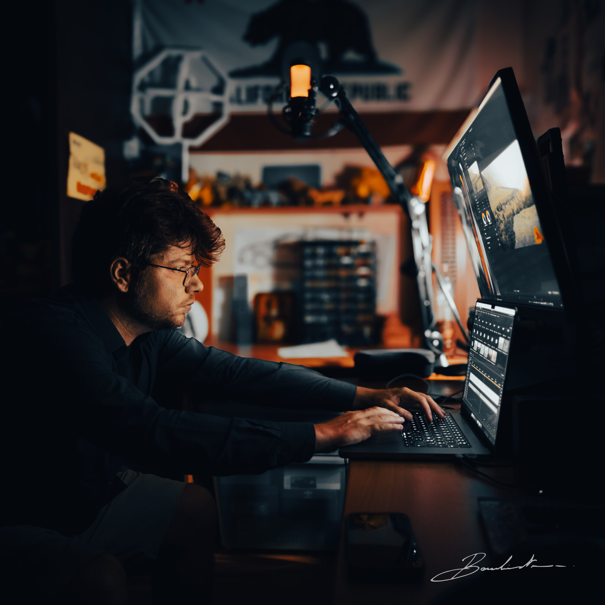

J'ai toujours voyagé et créé d'aussi loin que je me souvienne.
Je suis né et j'ai grandi dans le bassin houiller de Lorraine, à la frontière allemande, dans le nord-est de la France. Je suis ingénieur en développement informatique diplômé mais aussi et surtout auteur-réalisateur de films documentaires immersifs indépendants à la première personne.
En 2017, dans le cadre de mes études, je passe 6 mois au Japon. Grand habitué des voyages occidentaux, cette immersion en Extrême-Orient a marqué un tournant décisif.
Pour en garder une trace, je documente mes 6 mois de vie nippone en vidéo. Cet attrait presque obsessionnel pour la synergie entre le voyage et l'audiovisuel s'impose alors comme une évidence.
Les années suivantes, de retour en France, je me suis inévitablement senti à l'étroit derrière mon clavier, vissé sur ma chaise de bureau. Je recommence alors à partir encore et encore, dès que le temps et mes finances me le permettent.
En 2022 naît Le Bourbistan — contraction de bourbier et -stan, suffixe des pays d'Asie Centrale — avec un ami qui partageait les mêmes aspirations. Le temps et certains évènements nous séparent et je tiens aujourd'hui seul ce pays fictif, cette identité, ce narratif entre mes mains.
Je travaille désormais en autonomie complète, de l'écriture à la post-production (réalisation, cadre, son, montage, étalonnage). Cette approche me permet de conserver une cohérence artistique forte et un rapport direct au terrain, à l'image et au récit.
Ce travail s'inscrit dans une démarche documentaire au long cours, pensée comme un espace de création en dialogue avec des projets audiovisuels exigeants et variés.
Le Bourbistan est à ce jour le projet le plus abouti qu'il m'ait été donné d'entreprendre.
Et ce n'est que le début.
Ian